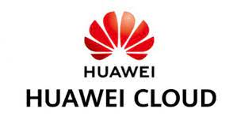

Informacion del Grupo
En este pagina llevaremos un control de avances de nuestro proyecto.

Miembros del proyecto
Datos de los miembros que trabajaron para hacer posible este proyecto
- Integrante 1: OJEDA SALAS BRYAN NICANOR
- Integrante 2: BAÑOS CHAVEZ JESUS FERNANDO
- Integrante 3: DAVILA RETAMOZO MAURICIO ANTONIO
- Integrante 4: CAYCHO YANCCE GIANNINA YERIMAR
- Integrante 5: ALMONACID GUTIERREZ DEYVID LUIS
AVANCES
En esta seccion del blog mostraremos todos los avances que se realizan semana a semana durante el plazo determinado para presentar el proyecto
HERRAMIENTAS
Todos los softaware que utilizamos para realizar este proyecto

Gitgub
GitHub es una forja para alojar proyectos utilizando el sistema de control de versiones Git. Se utiliza principalmente para la creación de código fuente de programas de ordenador. El software que opera GitHub fue escrito en Ruby on Rails. Desde enero de 2010, GitHub opera bajo el nombre de GitHub, Inc

Microsoft azure
Microsoft Azure es un servicio de computación en la nube creado por Microsoft para construir, probar, desplegar y administrar aplicaciones y servicios mediante el uso de sus centros de datos.
Huawei cloud
HUAWEI CLOUD es un proveedor líder de servicios en la nube, que reúne los más de 30 años de experiencia de Huawei en productos y soluciones de infraestructura de TIC. Estamos comprometidos a brindar servicios en la nube confiables, seguros y rentables para potenciar las aplicaciones, aprovechar el poder de los datos y ayudar a las organizaciones de todos los tamaños a crecer en el mundo inteligente de hoy. HUAWEI CLOUD también se compromete a brindar servicios de inteligencia artificial y nube asequibles, efectivos y confiables a través de la innovación tecnológica.
Teams
Microsoft Teams es una plataforma unificada de comunicación y colaboración que combina chat persistente en el lugar de trabajo, reuniones de video, almacenamiento de archivos e integración de aplicaciones.

Visual code
Visual Studio Code es un editor de código fuente desarrollado por Microsoft para Windows, Linux y macOS. Incluye soporte para la depuración, control integrado de Git, resaltado de sintaxis, finalización inteligente de código, fragmentos y refactorización de código